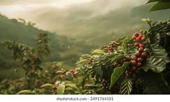

Tueste Artesanal Segun tu Perfil de Sabor
tostando desde el 2018
Grano de Especialidad
Diferentes Origenes y Perfiles de Tueste
Puntos que Consideramos
- El Esfuerzo de los Caficultores
- El Impacto Sostenible en el medio Ambiente
- La Calidad del Grano
Este Proceso va de la Mano desde:
Instagram Facebook 